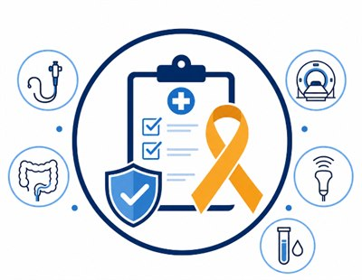

종합검진센터
금천구 공단건강검진 | 내일내과
일반건강검진·국가암검진부터 10대암 종합검진, 위·대장내시경까지
1. 종합검진
2. 공단검진
3. 채용검진
4. 추가특화검진
공단건강검진과 위·대장내시경을 한 곳에서
내일내과는 국민건강보험공단 건강검진을 시행하는 금천구 건강검진 의료기관입니다.
일반건강검진과 국가암검진을 시행하며 위·대장내시경 검사도 함께 운영하고 있습니다.
개인의 공단검진 대상 및 예약 일정에 따라 건강검진과 위·대장내시경 검사를 같은 날 진행할 수 있으므로 예약 시 상담해 주세요. 대장내시경 검사 중 용종이 발견되는 경우 환자의 상태와 용종의 크기·위치 등을 확인한 후 필요한 경우 용종절제술을 시행할 수 있습니다.
중요 안내
공단검진에 예방 목적의 대장내시경이 자동으로 포함되는 것은 아닙니다. 본인의 국가검진 대상 여부와 별도 검사 비용은 예약 시 확인하세요.
공단검진과 대장내시경을 함께 받고 싶으신가요? 예약 시 "공단건강검진과 수면 대장내시경을 같은 날 받고 싶습니다."라고 말씀해 주세요.
검진 대상과 예약 가능 일정을 확인해 안내드립니다.
검진 대상과 예약 가능 일정을 확인해 안내드립니다.
1. 종합검진
갑상선암, 폐암, 대장암, 위암, 유방암, 전립선암, 간암, 췌장암, 담도암, 신장암, 담낭암, 방광암, 자궁암 등...
국내암 발생의 90% 차지하는 10대암 종합검진
국내암 발생의 90% 차지하는 10대암 종합검진
정밀혈액검사 (암표지자 포함)
위내시경 / 대장내시경
폐CT / 복부조영CT
갑상선초음파, 전립선초음파, 유방초음파
성인병과 대사질환을 검진하는 정밀종합검진 포함입니다.
국내 암 발생의 90%를 차지하는
10대암
종합검진
종합검진

건강검진과 함께하면 좋은
내일내과
검진 플러스 +
검진 플러스 +
대장암 플러스 — 대장내시경 4~ (+ 수면비 9)
초음파 플러스 — 복부초음파 9, 유방초음파 10, 갑상선초음파 6
심혈관 플러스 — 경동맥초음파 8, 동맥경화검사 3, 심장초음파 12
혈액검사 플러스 — 정밀혈액검사A 40종 10, 정밀혈액검사B 72종 15
연령별 권장 검진
연령과 건강 상태에 따라 필요한 검진 항목은 달라질 수 있습니다. 금천내일내과는
연령대별로 위·대장내시경, 초음파, 혈액검사, 골밀도검사 등을 고려한 건강검진을 안내합니다.
30~40대
위내시경, 복부초음파
유방·갑상선 초음파
갑상선·호르몬 검사
자궁경부암 예방접종
유방·갑상선 초음파
갑상선·호르몬 검사
자궁경부암 예방접종
50대
위·대장내시경, 복부초음파
유방·갑상선 초음파
경동맥초음파
폐렴·대상포진 예방접종
유방·갑상선 초음파
경동맥초음파
폐렴·대상포진 예방접종
60대
위·대장내시경, 복부초음파
전립선 검사
유방·갑상선 초음파, 경동맥초음파
심장초음파, 골다공증 검사
전립선 검사
유방·갑상선 초음파, 경동맥초음파
심장초음파, 골다공증 검사
70대
위·대장내시경, 복부초음파
전립선 검사
유방·갑상선 초음파, 경동맥초음파
심장초음파, 골다공증 검사, 치매선별검사
전립선 검사
유방·갑상선 초음파, 경동맥초음파
심장초음파, 골다공증 검사, 치매선별검사
※ 실제 검진은 성별, 과거력, 가족력, 증상 및 의료진 상담에 따라 달라질 수 있습니다.
2. 공단검진
대상자
지역세대주, 직장가입자 및 만 40세이상 세대원과 피부양자
※ 2년마다 1회, 비사무직은 매년 실시
※ 40세, 66세는 생애전환기건강검진 대상자로 일반건강검진 대상자에서 제외됩니다.
※ 40세, 66세는 생애전환기건강검진 대상자로 일반건강검진 대상자에서 제외됩니다.
1차 건강검진 진단 및 통보
검진기관 검진 목록
1
기본 — 진찰, 상담, 신장, 체중, 시력, 청력, 혈압측정, 허리둘레, 체질량지수
2
콜레스테롤 검사 — 총콜레스테롤, HDL콜레스테롤, LDL콜레스테롤, 트리글리세라이드
3
AST(SGOT), ALT(SGPT)
4
혈당 검사 — 공복혈당 체크
5
요단백, 혈청크레아티닌
6
흉부방사선 촬영
7
KDSQ-PT 선별검사 (치매선별검사: 만 70세, 만74세만 해당)
결과 통보 절차
1차 건강검진 후 15일 이내 검진기관에서 주소지 발송
↓
건강위험평가 (HRA)
↓
1차 검진 결과 질환의심자에게 2차검진 실시
2차 건강검진 진단 및 통보
01대상자
1차 건강검진 진단 결과 통보서 확인 결과 고혈압, 당뇨병 질환의심자로 판정된 자 및 만 70세, 74세 1차 검진 수검자 중
인지기능장애 고위험군자
인지기능장애 고위험군자
접수방법
해당 검진기관 접수
022차 건강검진 항목
- 공통: 건강검진 진찰 및 상담
- 공복혈당 측정: 1차 검진 결과 당뇨병 의심자중 희망자에 한해
- 혈압 측정: 1차 검진 결과 고혈압 질환 의심자 대상
- KDSQ-C 선별검사 및 상담: 1차 검진 수검자 중 인지기능장애 고위험군 대상
- 공복혈당 측정: 1차 검진 결과 당뇨병 의심자중 희망자에 한해
- 혈압 측정: 1차 검진 결과 고혈압 질환 의심자 대상
- KDSQ-C 선별검사 및 상담: 1차 검진 수검자 중 인지기능장애 고위험군 대상
03건강검진표 발송 및 수령
건강검진표는 우편으로 수령이 가능하며 수령하지 못한 경우 분실 시에는 가까운 지사에서 재발급이 가능합니다.
3. 채용검진
4. 추가특화검진
기본 건강검진에 정밀 검사항목을 더해 개인의 건강 상태와 관심 질환을 보다 폭넓게 확인할 수 있는 선택형 검진 프로그램입니다.
혈액검사, 암표지자 검사, 여성질환 검사, 심혈관 검사로 구성되어 있습니다.